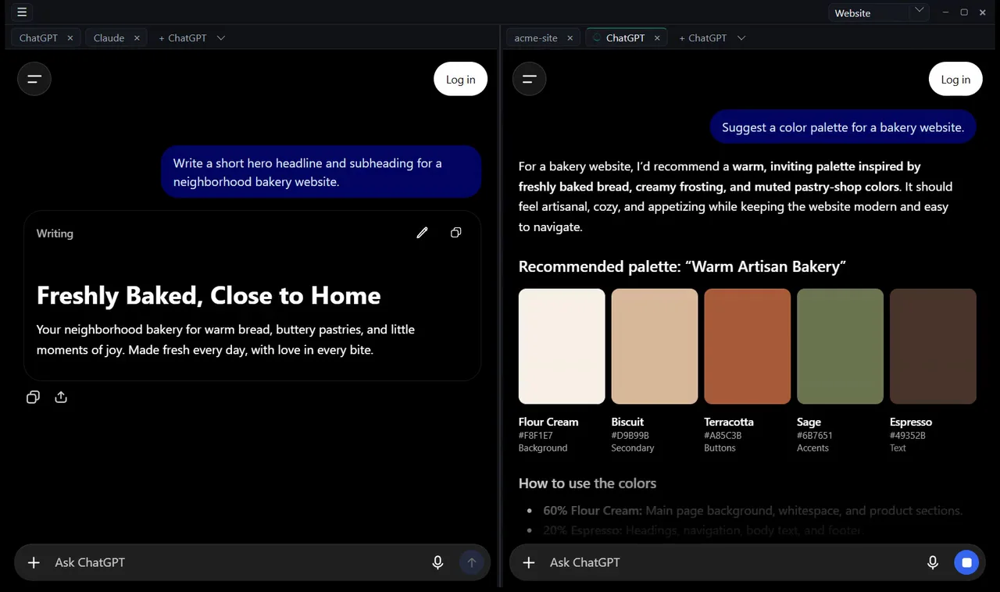

Entwickelt von Ermis Chorinopoulos
Ich habe ChatDeck von Grund auf selbst entworfen und gebaut, in Rust und Tauri. Ich suche eine Stelle als AI Engineer und freue mich über jedes Gespräch.
Für alle, die mehrere KI-Chats und Agenten gleichzeitig nutzen: Bereiche in jedem Layout, eine Gruppe pro Projekt, Terminals neben den Chats und ein Signal, sobald eine Antwort fertig ist.
Kostenlos während der Beta · Windows und Mac

In Aktion
Alles, was früher in einem Dutzend Browser-Tabs lag, in einem Fenster, das sich merkt, wie Sie es verlassen haben.
Ordnen Sie Ihre Tabs so an, wie Sie arbeiten: nebeneinander, übereinander oder als ganzes Raster.
Stellen Sie mehrere Fragen und arbeiten Sie weiter. Ein Tab zeigt einen Ring, solange die Antwort entsteht, und einen Punkt, sobald sie fertig ist, auf Wunsch mit Signalton.
Jede Gruppe hat eigene Tabs, Bereiche und ein eigenes Layout. Ein Gruppenwechsel tauscht den ganzen Arbeitsbereich mit einem Klick.
Und mehr
Eine native Desktop-App, kein weiterer Chat-Dienst.
PowerShell unter Windows, zsh am Mac. Claude Code oder Codex laufen direkt neben Ihren Chats.
ChatGPT und Claude genau wie im Browser, mit Ihren eigenen Abos und Limits. Keine API, nichts nachgebaut.
Windows 10 und 11, Macs mit Apple Silicon und Intel. Unter Windows kommen Updates direkt über die App.
Kein ChatDeck-Konto, keine Server, kein Tracking. Ihre Chats bleiben bei OpenAI und Anthropic.
Beta
Tragen Sie sich in die Warteliste ein. Ich schicke Ihnen den Download-Link per E-Mail, sobald die Beta startet.
Ich habe ChatDeck von Grund auf selbst entworfen und gebaut, in Rust und Tauri. Ich suche eine Stelle als AI Engineer und freue mich über jedes Gespräch.